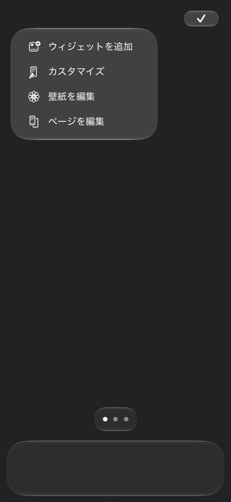
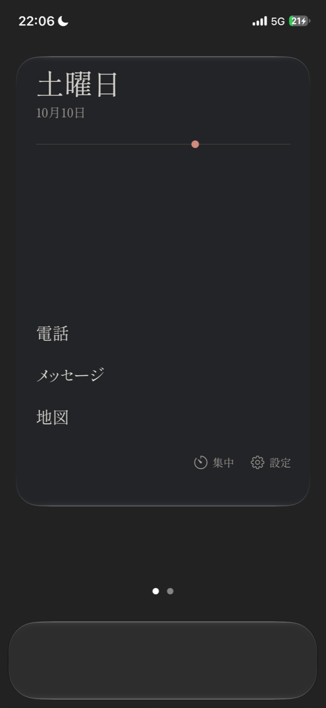
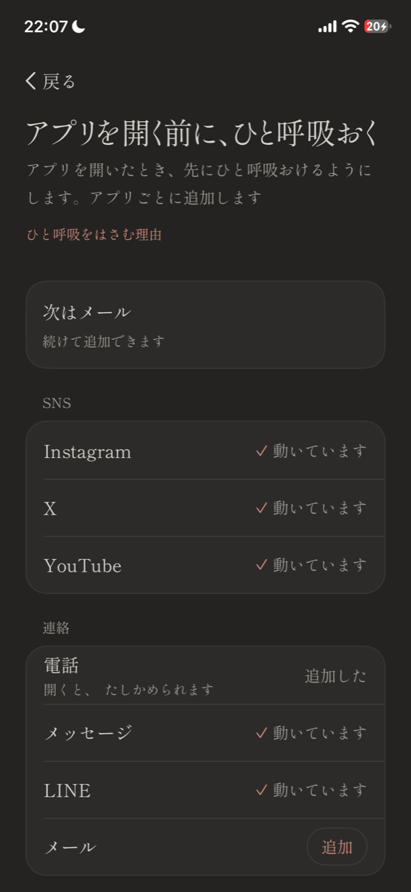
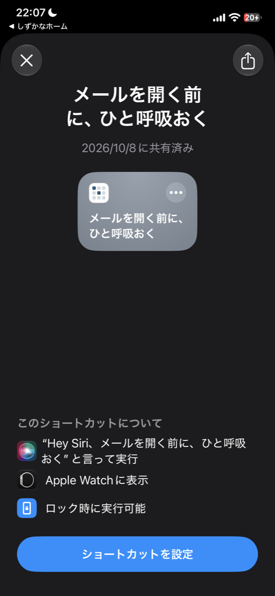
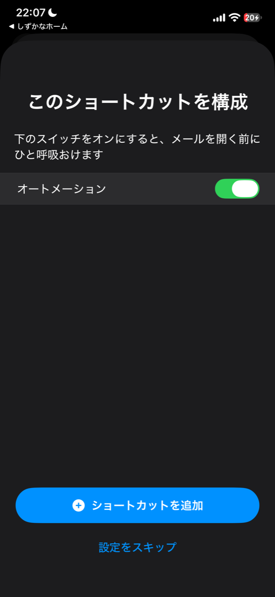

ホーム画面に置くのはウィジェット1つだけ。使うアプリの名前を文字で並べ、SNSなどを開く前に10秒だけ止まれるアプリです。App Storeで見る
アプリの最初の画面で「はじめる」を押すと、ウィジェットを置く画面になります。

① ホーム画面の何もない所を長押しし、左上のボタンから「ウィジェットを追加」を押します。
② 一覧から「しずかなホーム」を選び、iOS 27では「特大」、iOS 26では「大」を1つ置きます。

③ 置いたら、しずかなホームに戻ります。自動で次の画面に進みます。
並べるアプリは、アプリの設定の「ホームに並べるアプリ」で6つまで選べます。
アプリを開いたとき、先に10秒のひと呼吸が出るようにします。iOS 27では、アプリごとに用意したショートカットを取り込むだけで使えます。

① 設定の「開く前のひと呼吸」で「アプリを追加」を押し、ひと呼吸をおきたいアプリの「追加」を押します。初めてのときは案内が出るので、「ショートカットで追加」を押します。

② ショートカットAppが開きます。下の「ショートカットを設定」を押します。

③ 「オートメーション」のスイッチをオンにして、「ショートカットを追加」を押します。iOS 27では「ショートカットを追加」が反応しないことがあります(Appleに報告済みの不具合です)。そのときは、その下の「設定をスキップ」を押すと取り込めます。
④ 左上の「しずかなホーム」で戻ります。そのアプリを開いてひと呼吸が出ると、追加の画面の表示が「動いています」に変わります。
iOS 26のときや、取り込みがうまくいかないときは、追加の画面の「手順を見ながら設定する」から、ショートカットAppのオートメーションを自分で作れます。
ホーム画面を長押しして、下の点を押します。ウィジェットのページ以外のチェックを外します。アプリは消えず、Appライブラリから開けます。同じ手順で、すぐ戻せます。
設定の「その他」の「もっと静かにする」で「壁紙を無地にする」を開き、「壁紙を写真に保存」を押します。保存した画像を、iPhoneの設定の「壁紙」からホーム画面に選びます。ホーム画面の「カスタマイズ」で太陽のマークをオフにすると、壁紙とウィジェットの境目が見えなくなります。
ひと呼吸を出すアプリは、しずかなホームの設定で、1つずつでも、まとめてでもオフにできます。
① しずかなホームの設定で、「開く前のひと呼吸」の「ひと呼吸を出すアプリ」を押します。
② 一覧で、ひと呼吸を出したくないアプリを押します。右のチェックが消えたアプリはオフで、開いてもひと呼吸が出ません。もう一度押すとオンに戻ります。
③ 全部をまとめて切るときは「すべてオフ」、まとめて戻すときは「すべてオン」を押します。
無料のあいだは、オンのうち一番上の1つだけでひと呼吸が出ます。
完全にやめるときは、ショートカットAppの「オートメーション」で、そのアプリのオートメーションを消します。
あとでまた使うときは、ひと呼吸を足す手順で、もう一度追加できます。
iPhoneの設定の「通知」から「時刻指定要約」を選ぶと、通知を1日3回などにまとめて受け取れます。全部を切らなくても大丈夫です。
設定の「集中」から使います。
集中のあいだ開かないアプリは、iPhoneのスクリーンタイムの一覧から自分で選びます。「集中をおわる」でいつでも終えられます。
設定の「その他」の「着せ替え」で、藍・余白・白黒から選べます。ウィジェットとアプリの中の、色と文字が変わります。藍のほかの2つは有料版です。
設定の「その他」で「日付と時間の線を出す」を切ると、ウィジェットに出るのはアプリの名前と「集中」「設定」だけになります。今から集中しているあいだは、残りの時間の線が出ます。
開く前に一度止まると、開くか、やめておくかを、その場で自分で選べます。開く前に間を置く仕組みについては、こうした研究があります。